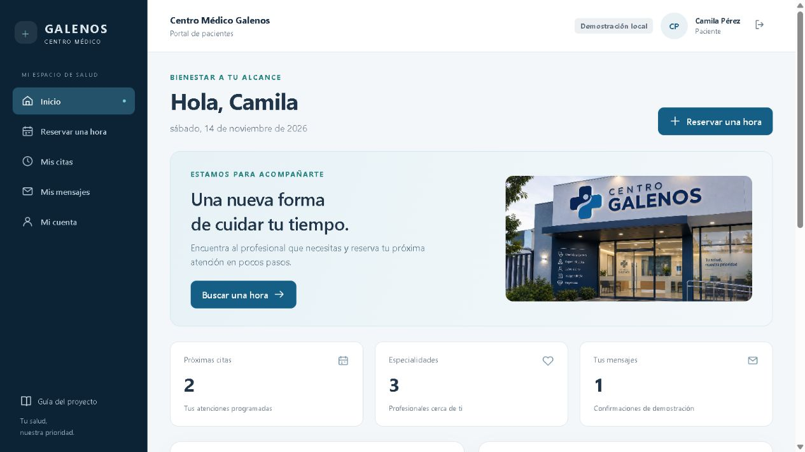

Aplicación
Recorre los perfiles de paciente, secretaría, caja, médico y administración. Reserva una cita y sigue su recorrido.
Entrar al prototipo →Explora el prototipo del Centro Médico Galenos, conoce el trabajo del equipo y revisa la documentación que lo sustenta.
Cinco perfiles de demostración · Sin instalación
Todos los materiales compartidos parten de esta página principal.
Recorre los perfiles de paciente, secretaría, caja, médico y administración. Reserva una cita y sigue su recorrido.
Entrar al prototipo →Visualiza las diapositivas en el navegador y descarga el PowerPoint editable para preparar la exposición.
Abrir presentación →Consulta producto, Scrum, backlog, criterios de aceptación, arquitectura, pruebas, decisiones y entrega académica.
Revisar documentación →Puedes indicar los próximos cambios en el chat o registrarlos en GitHub. Una vez implementados, probados y publicados, se verán en este mismo portal al volver a cargarlo.
Cómo se actualiza el proyecto